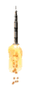
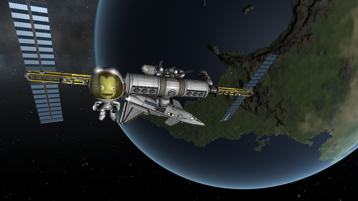
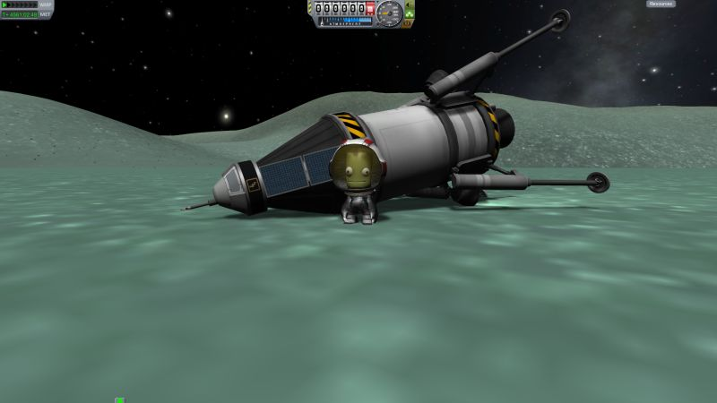
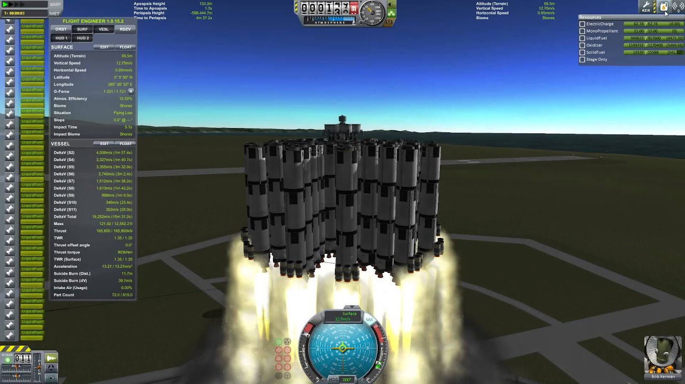

January 21 2023
Do you satisfy atleast one of the below conditions?
- You like physics
- You like to play sandbox games
- You are an astronaut / rocket scientist
- You want to have fun
Then you will love my favourite game - Kerbal Space Program!
Kerbal Space program is a crazy sandbox rocket-making space simulation game where you try to not crash your poorly designed rockets as you try to explore the fictional solar system in the game.
Most of your rockets are likely to crash or run out of fuel, sometimes leading to fun rescue missons for rescue missions...
The game has realistic physics so its fun to try to optimize your rockets to reduce weight and drag and plan complex manevours to reach distant planets.
Or, of course, you can always go with MOAR BOOSTERS!
